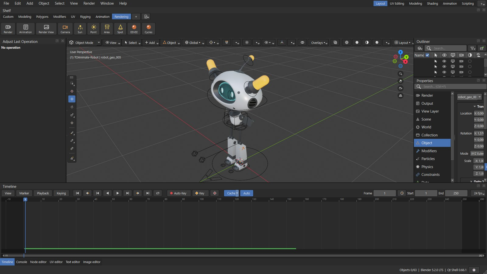
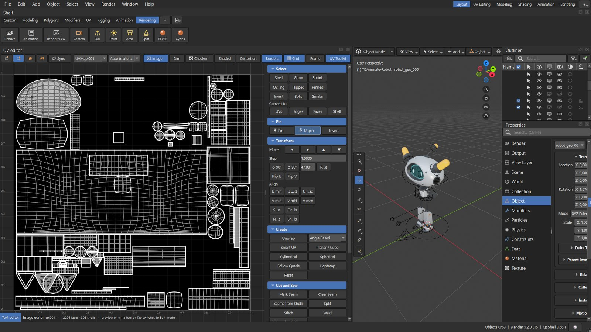
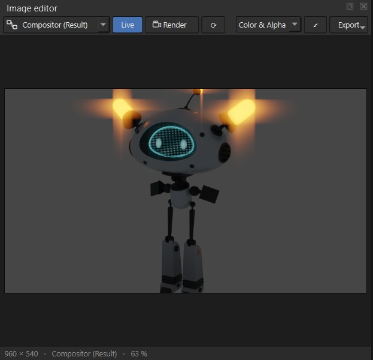

Blender, with a Qt interface
Qt Shell is a Blender add-on that replaces Blender's UI with a PySide6 window – viewport, outliner, properties, timeline and editors, with shelves and Maya-style shortcuts. Your scenes, operators and add-ons stay pure Blender.

What runs in Qt
Blender keeps doing the work – Qt Shell draws the interface around it.
3D viewport
Blender renders the scene off-screen and Qt shows it. Orbit, pan, zoom, numpad views, selection, G / R / S with axes and numeric input, transform gizmos and snapping.
Blender's own menus
File, Edit, Add, Object, Select and Render are built from Blender's original menus – including entries added by other add-ons.
Maya & Blender keys
Switch between Maya and Blender key sets and navigation, edit every shortcut in the Keyboard Shortcuts window.
Outliner & Properties
Collections, restriction columns, drag & drop; all property tabs, modifiers and constraints as native Qt widgets.
Timeline & playback
Keys, markers, preview range, loop modes and cached playback that plays heavy scenes in real time.
Graph & Node editors
F-curve editing, shader, geometry and compositor node trees with node search and a property panel.
UV editor
Maya- and Blender-style UV editing with a UV Toolkit: select, pin, align, unwrap, cut and sew, texel density, checker map.
Image editor
Live compositor result, Render Result and rendered animations with a cached timeline; export images and MP4.
Render View
Render slots, channels, sampling and annotations, F12 / F11, plus an Animation Player for rendered frames.
Shelf
Maya-style shelves with built-in sets for modeling, UV, rigging, animation and rendering – or your own buttons and scripts.
Blue Pencil
2D drawings keyed on frames over the viewport, retiming on the Timeline, burnt into renders and playblasts.
Text editor & Console
Python editor with tabs, live checks, outline and find / replace; console tracebacks link to the source line.
Workspaces
Layout, Modeling, Shading, Animation, Scripting, UV Editing and Compositing – dockable panels you can rearrange.
Help → Search
Find any menu item, tab, button or operator in the whole window, like Maya's search.
Python API
A small public API for scripts and other add-ons – see API.md.
Screenshots
Taken from Qt Shell running in Blender 5.2 with the TOAnimate Robot rig.

UV Editing
The UV editor works on all selected meshes at once and stays fast on dense UV layouts.
- Maya or Blender style selection and tools
- UV Toolkit: pin, align, rotate, flip, unwrap
- Cut and sew, unfold, layout, texel density
- Checker map drawn on the mesh in the 3D view
Compositing
The Image editor follows the compositor: add or change a node and the result updates live.
- Compositor result, Viewer node, Render Result
- Rendered animation with a cached timeline
- Live compositing of already rendered frames
- Export images, image sequences and MP4

Install
About a minute. No admin rights needed.
- Download
qt_shell.zipfrom the latest release. - In Blender: Edit → Preferences → Add-ons → ▾ → Install from Disk… and pick
qt_shell.zip. - Enable the Qt Shell add-on and click Install PySide6 in its preferences (Blender pauses while it downloads).
- Start it with Window → Open Qt Shell – or tick Start Qt Shell when Blender starts.
Use the qt_shell.zip from Releases – the “Code → Download ZIP” archive contains the whole repository and Blender cannot install it.
After updating, restart Blender; the status bar shows the running version.